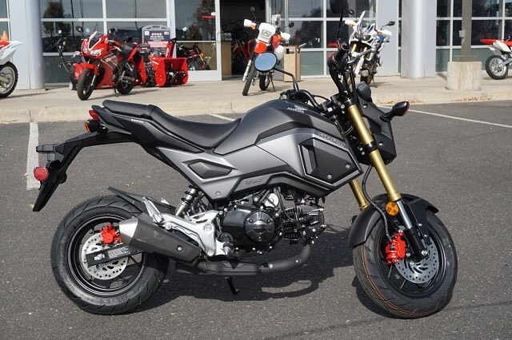
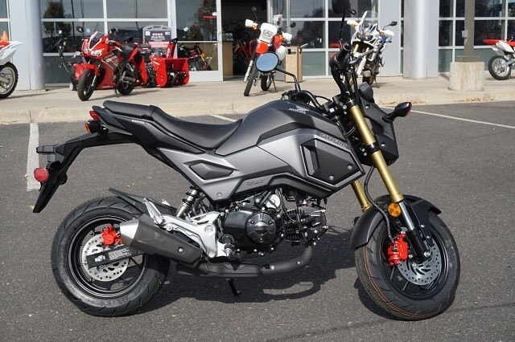
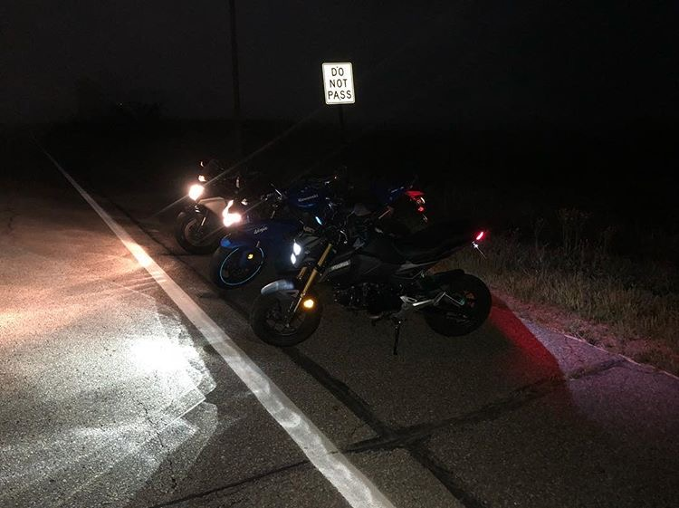

Before:
This is the grom before the parts.
After:

Modified grom with parts.
Welcome to my 2018 Honda Grom page, where I will show the mods that I have done to my bike.
Before:
This is the grom before the parts.
After:
Modified grom with parts.
These are the parts used for the mods:
Summary:
The parts were somewhat tricky to install, but the results were/felt noticeable. I am satified with how it turned out, and looking forward to a bigger bike!
